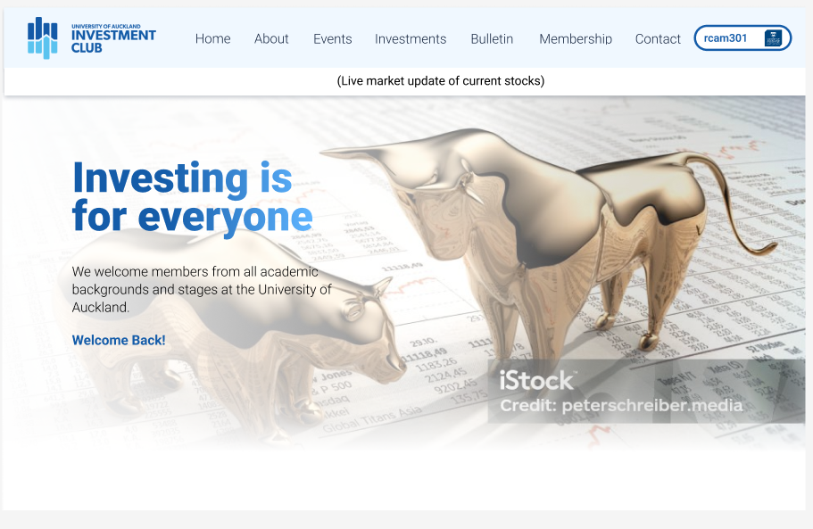
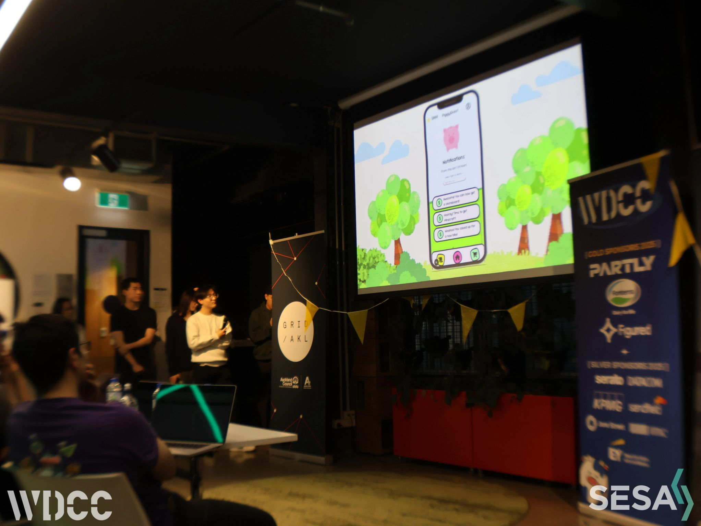
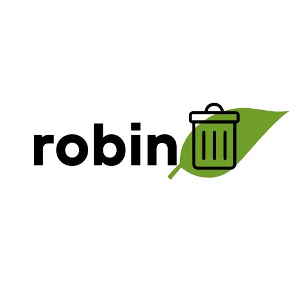
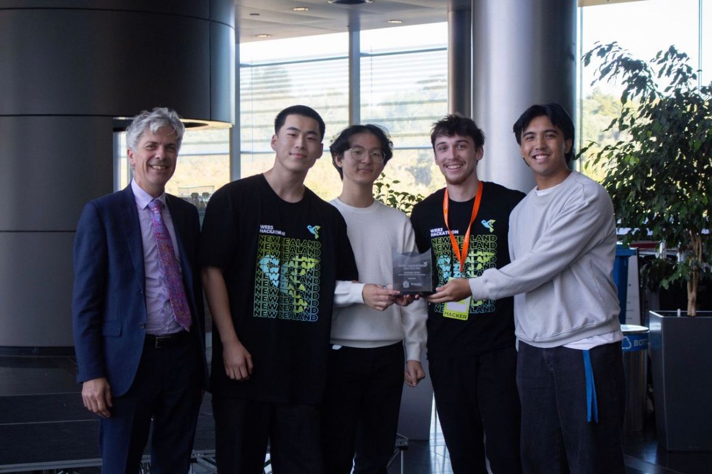
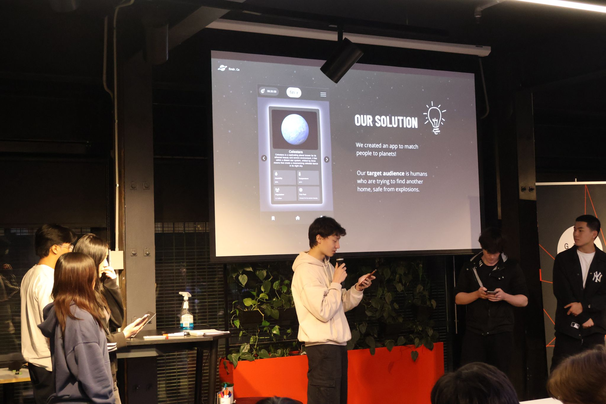

About Me
Second Year Computer Science student at the University of Auckland with award-winning experience across Web3, React, and fullstack development. Achievements include 1st Place at NZ’s first Web3 hackathon and Exec’s Choice at the UoA Scientific Hackathon. Skilled in Git, Solidity, React, Next.js, Tailwind CSS, and AI-driven object detection. Passionate about building innovative tech solutions and driving impactful projects.
Education
University of Auckland
Bachelor of Science in Computer Science
Auckland, NZ
March 2024–Present
Experience
WDCC - Web Development & Consulting Club
Web Developer (Full Stack | React, Tailwind, Payload, Next.js, MongoDB)
Auckland, NZ
March 2025–Present
Contributed to the development of a full-stack website for the University of Auckland Investment Club (UAIC), enabling users to register, sign up, and complete membership payments online.
Feel Good Kicks
Web Designer & Front End Developer (Figma, React, Tailwind)
Auckland, NZ
Jan 2023–June 2023
Contributed to the development and design of an e-commerce platform for a sneaker retail business, supporting product listings, customer interactions, and streamlined online purchases.
Projects
UAIC Website
Role: Full Stack Developer
Date: March 2025–Present
Tech Stack: React, Tailwind, Payload, Next.js, MongoDB
Developed a full-stack website for the University of Auckland Investment Club (UAIC), enabling user registration, sign-ups, and online membership payments.
View DetailsPiggyQuest
Role: Front End Developer
Date: July 2025
Tech Stack:( React, Tailwind)
WDCC x SESA Hackathon. Created a digital app to gamify household tasks for kids, helping parents tackle real family challenges through technology.
View DetailsRobin
Role: Full Stack Developer
Date: March 2025
Tech Stack: (Tensorflow, COCO-SSD Model, Javascript, HTML, CSS)
UoA Scientific Hackathon. Developed an AI-powered rubbish detection system to improve waste disposal habits on campus, winning the Exec’s Choice Award.
View DetailsCrypto Critters
Role: Full Stack Developer
Date: March 2025
Tech Stack: Hardhat, Solidity, Scaffold-ETH, Ethers.js, React, Next.js, Tailwind CSS
WEB3 Blockchain Hackathon 2025. Created a Web3 game supporting conservation efforts by converting in-game currency to crypto, winning the Kiwiana Prize for the most impactful NZ solution.
View DetailsFindr
Role: Front End Developer
Date:July 2024
Tech Stack: (HTML, CSS, Javascript)
SESA x WDCC Hackathon. Developed a web app inspired by Tinder, allowing users to swipe to save planets and learn about the cosmos, winning the ‘Most Entertaining Solution’ prize.
View DetailsContact
Feel free to reach out to me at evan@example.com.